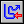
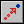

Set Path
With this action you can specify that the instance should follow a
particular path. You indicate the path that must be followed and
the speed in pixels per step. When the speed is positive the
instance starts at the beginning of the path. If it is negative it
starts at the end. Next you specify the end behavior, that is, what
should happen when the end of the path is reached. You can choose
to stop the motion, restart from the beginning, restart from the
current position (which is the same when the path is closed), or
reverse the motion. Finally you can indicate that the path must be
seen as absolute, that is, the position will be as indicated in the
path (this is useful when you have designed the path at a
particular place in the room) or relative, in which case the start
point of the path is placed at the current location of the instance
(end point when speed is negative). See the chapter on paths for
more information.
End Path
Use this action to stop the path for the instance.
 Path
Position
With this action you can change the current position of the
instance in the path. This must be a value between 0 and 1
(0=beginning, 1=end).
Path Speed
With this action you can change the speed of the instance on the
path. A negative speed moves the instance backwards along the path.
Set it to 0 to temporarily stop the motion along the path.
 Step Towards
This action should be placed in the step event to let the instance
take a step towards a particular position. When the instance is
already at the position it will not move any further. You specify
the position to move to, the speed with which to move, that is, the
size of the step, and whether the motion should stop when hitting a
solid instance or when hitting any instance.
Step
Avoiding
This is a very powerful motion action. It should be placed in the
step event. Like the previous action it lets the instance take a
step towards a particular position. But in this case it tries to
avoid obstacles. When the instance would run into a solid instance
(or any instance) it will change the direction of motion to try to
avoid the instance and move around it. The approach is not
guaranteed to work but in most easy cases it will effectively move
the instance towards the goal. For more complicated cases, there
are motion planning functions. You specify the position to move to,
the speed with which to move, that is, the size of the step, and
whether the motion should avoid solid instances or any
instance.
| Converted from CHM to HTML with chm2web Pro 2.85 (unicode) |